7 giugno – 22 luglio 2011
L’undicesima campagna di scavo del Dipartimento di Archeologia dell'Università degli Studi di Bologna, come sempre diretta da Giuseppe Lepore e coordinata sul campo dal dott. Tommaso Casci Ceccacci, è stata concentrata su due settori di scavo, affidati rispettivamente al dott. Fabio Visani (area magazzino) alla dott.ssa Elisa Cipriani (area H). Il Laboratorio materiali, attivato contestualmente allo scavo e diretto dalla dott.ssa Anna Gamberini, è stato condotto dalla dott.ssa Gilda Assenti.
Al termine della campagna di scavo, infine, il tempestivo intervento del Comune, coordinato da Goffredo Luzietti, ha permesso la realizzazione di un sistema di drenaggio che eviterà l’accumulo di acqua all’interno dello scavo.
L’AREA H (INTERNO NAVATA)
La sistemazione dell’area di scavo in previsione dei restauri ha determinato la regolarizzazione del settore indagato e ha messo in luce l’intero percorso del muro perimetrale N della chiesa, così da permettere una visione d’insieme dell’interno della navata.
Il muro perimetrale della navatella N era ampiamente spogliato anche se conservava alcuni tratti della fondazione (eseguita, come sempre, disponendo frammenti di laterizio inclinati a 45 gradi). Si è proceduto poi allo smontaggio dei livelli residui, tutti sottostanti la pavimentazione della navata di età romanica e dunque ascrivibili alle più antiche fasi della frequentazione dell’area. La successione di limi e argille gialle messe in luce hanno dimostrato di contenere diversi materiali più antichi, probabilmente residuali, ma di grande interesse storico in quanto ascrivibili -ad una primissima analisi superficiale- all’età neolitica e all’età del Bronzo. Si tratta per lo più di frammenti di ceramica ad impasto, ma spicca il rinvenimento di una punta di freccia in selce, probabilmente riferibile ad un orizzonte tardo eneolitico (più raro nell’età del Bronzo).
Tra la porta di accesso alla cripta, poi, e la grande tomba in muratura già individuata al centro della navatella è emersa una piccola sepoltura: si tratta di un individuo subadulto, deposto entro semplice fossa terragna con la testa a O. E’ altamente probabile che si tratti di una delle sepolture collegabili all’impianto della prima chiesa che doveva terminare poco dopo la seconda lesena.
Proseguendo verso O all’interno della navatella si incontra la grande fornace di età romana, il cui scavo è stato finalmente completato. La fornacesi conserva esclusivamente a livello di camera di combustione; restano infatti alcuni tratti dei 4 pilastrini che dovevano sorreggere il piano forato; quest’ultimo è stato trovato, in frammenti, crollato sul fondo della camera di combustione che, a sua volta, conservava uno strato di ca. 10 cm composto da calce e da un inerte US 2421); difficile per ora definire la funzione di questo residuo, al quale erano anche mescolati resti di cenere e carboni, evidentemente riferibili all’ultima infornata prima della defunzionalizzazione.
L’AREA H (ESTERNO NAVATA)
L’indagine condotta all’esterno dell’absidiola ha messo in luce un ampio settore del cimitero che doveva addossarsi all’intera area absidale. Si tratta infatti di un settore importante dell’area sacra, vicino all’edificio di culto e anche alla sottostante cripta.
La tomba principale (US 2205), a cassa antropomorfa, è realizzata con frammenti di laterizi romani e si addossa, fino quasi a toccarla, all’absidiola della navatella N. All’estremità N la sepoltura presenta un settore realizzato con laterizi e abbiadante malta di calce, probabilmente a sostenere un segnacolo funerario di qualche importanza. La tomba, alla quale si sovrapponeva un’ampia riduzione contenente ben 5 teschi oltre alle ossa lunghe, conteneva un inumato di probabile sesso maschile, con la testa rivolta a N e le braccia lungo i fianchi.
Quest’area, dunque, ci fornisce un dato fondamentale per la ricostruzione del piano d’uso di età medievale che si doveva collocare tra 1,40 e 1,30 m.
L’AREA DEL CD. MAGAZZINO
All’interno dei lavori della campagna 2011 si è poi deciso di terminare l’indagine all’interno del cd. magazzino in modo tale da permettere la chiusure dell’invaso e la messa in sicurezza dell’intero settore. Le indagini passate avevano già messo in luce due tombe a lassa laterizia, anch’esse molto vicine all’area absidale e, ad una quota inferiore, il fondo di una seconda fornace, del tutto simile a quella appena descritta.
Alla ripresa dei lavori è emersa una situazione stratigrafica molto interessante, caratterizzata da una sorta di grande “canale”, con probabile andamento N-S che arriva a lambire l’esterno dell’abside stessa. La cosa più interessante è che tale invaso è stato reinciso, pressocché nella stesso punto, per almeno 4 volte consecutive, prima del riempimento definitivo dell’invaso. Il primo taglio (US 315) è il più antico e taglia la fornace forse per ottenere una prima canalizzazione; nel suo riempimento emerge materiale di età tardo antica; le altre reincisioni (e i relativi riempimenti) danno materiali che si collocano tra XI e XIII secolo, evidentemente in connessione con le attività del monastero (spiccano, infatti, i manici di paioli, ceramica grezza da fuoco e i residui di fave carbonizzate).
Il fondo della stratigrafia, poi, costituito dalla solita argilla gialla, ha restituito diversi frammenti di ceramica ad impasto riferibili, con buona probabilità all’età del Bronzo.
IL SAGGIO I
Per completare il quadro d’insieme della chiesa è stato seguito un sondaggio nel settore E del campo sportivo, finalizzato alla ricerca della facciata originaria del complesso. Ed infatti si rinviene l’angolo N-O dell’edificio, perfettamente conservato anche in alzato per un’altezza di almeno 1,50 m. La struttura, composta come sempre di laterizi di reimpiego legati con malta di calce e ghiaia, presentava due paraste angolari, larghe ca. 50 cm l’una; il muro era largo 55 cm. Ad una quota di ca. 1,40 m, perfettamente congruente con quella individuata all’esterno dell’absidiola, è stato individuato il piano esterno della chiesa, composto da un semplice battuto di frammenti di laterizio disposti di piatto. Degno di nota è il fatto che ben 3 sepolture di infanti fossero addossate alla facciata e sovrapposte tra di loro, facendo così pensare alla presenza di un suggrundarium.
Un ulteriore approfondimento della trincea, infine, operato poco prima della chiusura del sondaggio, ha messo in luce una interessantissima stratigrafia: alla quota di ca. – 2,20 m, infatti, sono emersi due distinti strati a matrice argillosa, contenenti numerosi frammenti di ceramica ad impasto, sempre riferibile -genericamente- all’età del Bronzo.
Partecipanti
- Giuseppe Lepore
- Tommaso Casci Ceccacci
- Fabio Visani
- Elisa Cipriani
- Gilda Assenti
- Fabio Visani
- Michele Silani
- Federica Boschi
- Francesco Belfiori
- Grazia Campanella
- Giulia Borsellini
- Cristina Cordoni
- Fabio Cristoferi
- Silvia Di Cristina
- Francesco Luna
- Federica Galazzi
- Francesco Luna
- Pier Luigi Morbidoni
- Carmen Palermo
- Simone Schimd
- Scollo Melina
- Ruscelli Monica
- Mirco Zaccaria
 Campagna di scavi 2011
Campagna di scavi 2011- 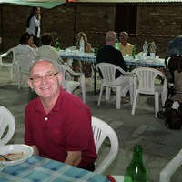Campagna di scavi 2011
- 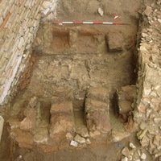Campagna di scavi 2011
- 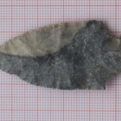Campagna di scavi 2011
- 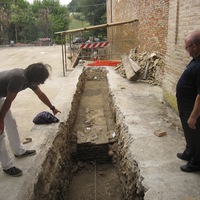Campagna di scavi 2011
- 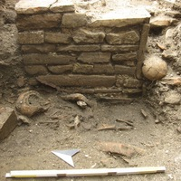Campagna di scavi 2011
- 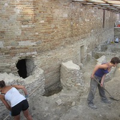Campagna di scavi 2011
- 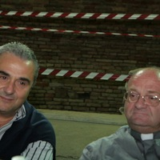Campagna di scavi 2011
- 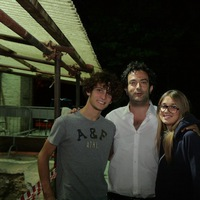Campagna di scavi 2011
- 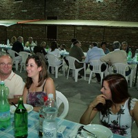Campagna di scavi 2011
- 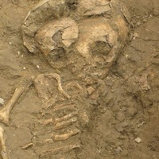Campagna di scavi 2011
- 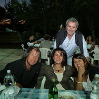Campagna di scavi 2011
- 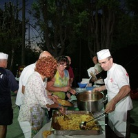Campagna di scavi 2011
- 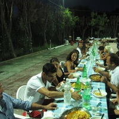Campagna di scavi 2011
- 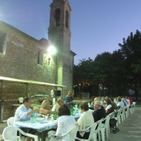Campagna di scavi 2011
- 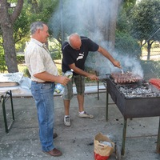Campagna di scavi 2011
- 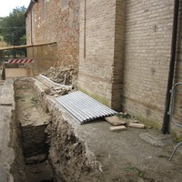Campagna di scavi 2011
- 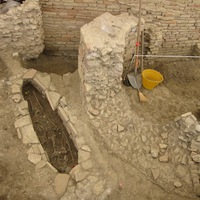Campagna di scavi 2011
- 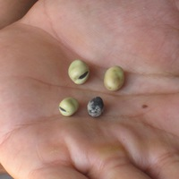Campagna di scavi 2011

{kind=link}
{kind=link}
{kind=link}
{kind=link}
{kind=link}
{kind=link}
{kind=link}
{kind=link}
{kind=link}
{kind=link}
{kind=link}
{kind=link}
{kind=link}
{kind=link}
{kind=link}
{kind=link}
{kind=link}
{kind=link}